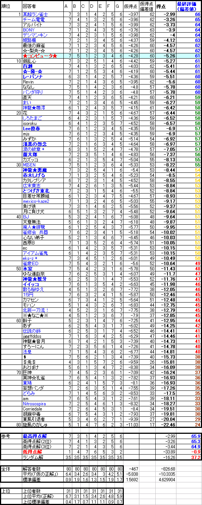

システマティック麻雀工学：
３：点数状況判断技術の定量化理論と実装

何切る掲示板で行ったテストの結果はこちら
概要：
点数の状況判断をどうするかという問題は、麻雀の理論化において避けて通れない問題である。
確認しておくと、ここで述べる点数状況判断とは、最終的な目的（トップ率であったり、平均順位であったり、総得点であったりする）に対して、「ある局の得点状況」がどの程度有利または不利に働くかを判断することを表す。
コンピュータと対戦していると「意味のない上がり」をしたり、降りるべき局面で降りなかったりする。
オーラス間際に3位と20000点差もある4位なのに「点数期待値が正だから」1000点を上がってしまうような、「機械的な」打ち方をしてしまったりする。
こうした違和感があるのは、各局における「その局で得点するための最善の打ち方」と、点数状況を加味した「トップ率重視の打ち方」などとが違うからである。
「得点と順位」のような静的な関係が明らかにされて初めて、「ここは安く流すべきかどうか」「和了率を下げてでもハネマンに受けるべきかどうか」「この局ではベタオリすべきかどうか」「差し込むべきかどうか」「この局で和了率を○％引き上げて放銃率を×％悪化させることは正しい選択か」「そのために今、この牌を切ることは妥当か」などの、局内部における、試合全体を見据えた判断が可能になるわけだ。
これまでの麻雀の定量的研究は、局内部での「点数期待値」しか相手にできなかった感がある。
オーラスでリーチされた場合に攻めるか降りるか、といった程度に単純な状況を除いて、点数と順位を総合的に判断する方法論は全くなかった。
そこでここでは、超ランの他家のほとんどより常に優れた点数状況判断をするための、定量的点数状況判断理論を構築する。
理論の枠組み：
まずは、理論的に点数状況判断を定量化する手続き（アルゴリズム）を記述する。
ある一局の進み方（和了者の分布、得点の分布、放銃率の分布、流局率、流局時テンパイ率など）が仮定されているものとする。
現在の点数と局数、親の位置によって、順位分布が一意に決定されるものと考えると、次のように計算できる。
関数Ｆを、（現在の得点状況、局数、親の位置）の引数を取り、返り値として順位分布・平均順位を返す関数であるとする。
麻雀とは「状況」がＡ→Ｂのように（ここでは時間的にＡからＢに）変化することを繰り返す作業であると考えると、一般に
Ｆ（状況Ａ）＝Σall｛Ｐ（状況Ｂ｜状況Ａ） × Ｆ（状況Ｂ）｝ （Ｐは条件付確率 all：状況Ａから遷移可能な全ての状況Ｂ）
という再帰関係式が成立することは明らかである。
Ａ→Ｂなる状況の遷移確率は、和了率や和了時の得点分布などの各種パラメータから求められ、なおかつ遷移の組み合わせは各種パラメータから有限個だけ設定することが可能であり、また再帰的に呼ばれる「状況Ｂ」には最終的に一定値を持たせることができる（後述）から、この式を用いると、麻雀の全ての点数状況（および局番号、親の位置）から、順位分布などを一意に評価できる。
状況Ａをある局のある状況、状況Ｂをその次の局のある状況、という風に取ることによって、ある局の順位期待値（やトップ率期待値など）が、その次の局のそれらで表せるようになる。
Ｆ（オーラスの局+1）、つまり麻雀が終わった状態においては、得点の単純な比較によって「平均順位や順位分布」を返すことは容易であるから、オーラスの順位期待値等を計算することができるし、オーラスの順位期待値がわかればその前の局も計算でき・・・というふうに、再帰的に全ての局に対して順位期待値等を計算することが可能である。
ただし、上の式のままでは、Ｆ（ある局）がＦ（それと同じ局）によって循環的に定義されてしまう可能性があるので（流局や親のレンチャンなど）、Ｆ（ある局）がＦ（その次の局）で必ず定義されるように、限界の局数をあらかじめ設定しておき（20本場など）、関数Ｆの引数にそのパラメータを加え、もし限界を超えていれば関数Ｆは返り値として2.5を返す、などにすることによってこれを回避する（実際に20本場を迎える可能性は限りなく0に近いため、この誤差は無視できる）。あるいは、その状況への遷移確率が1％未満であるような状態になったら2.5を返す、などの方法でもよい。
この関数Ｆを呼び出すことによって、和了率等パラメータに応じて、任意の得点状況・局数・親の位置に対する最終順位を理論的に計算することが可能である。
関数Ｆを実装することは困難ではない。
和了の際の得点分布や、和了の確率、放銃の確率などのパラメータさえ用意してしまえば、人によるが30分もあればこの関数をプログラミングできるだろう。
しかも、この方法は極めて論理的であり、パラメータが適切である限りにおいて順位分布を理論的に正確に求めることが可能だし、途中の局でパラメータを変更できる応用性（例えばゲーム理論的応用）も持っている。
直感的な説明：
理論をイメージ図とともに補足する。
図1：シンプルな場合
例えばこの図において、
Ａ→B1 3/8
Ａ→B2 2/8
Ａ→B3 2/8
Ａ→Ａ 1/8
という遷移確率がわかっているとしよう。
状態B1は「1位」、状態B2は「2位」、状態B3は「3位」だとすれば、状態Ａでの順位期待値Ｊは、
Ｊ＝（3/8×1）＋（2/8×2）＋（2/8×3）＋（1/8×Ｊ）
という式から求めることが可能である。
これはちょうど、状態Ａが「オーラスの得点状況」を表していて、状態Ｂのそれぞれが「上がった場合、ツモられた場合、振った場合」などに対応しているような場合の例である。
Ａ→Ａという遷移は、流局などの場合に相当する。
この遷移確率や状態数をもっと複雑に取って正確にすれば、状態Ａでの状況判断ができるわけだ。
基本的な原理はこれだけのことである。
図2：階層化された場合
このようにして、一番上の層を東3、真ん中の層をオーラス、一番下を「順位」だとして同様の方法で「東3での状況判断」ができることになる。
もちろん実際には状況の変化が2パターンとか3パターンしかないことはあり得ず、より複雑な図形になる。
さらに階層化していけば、東2や東1の得点状況での、最終順位を計算できるようになる。
ここで問題なのは、同じ層同士での移動が可能だということだ。
状態Ａ→状態Ａという可能性を先に考慮したが、実際は流局やレンチャンによって状態Ａ→それと別の状態Ａ’のような遷移も頻繁に起こり得る。
そうすると、状態Ａの解を求めるためには状態Ａ’の解が必要で、状態Ａ’の解を求めるには状態Ａ’’の解が必要・・・、というようになってしまい、解が求まらない。
そこで先に述べた「同層移動の回数制限」を設けるのである。
図3：同層移動制限の説明
このように、限界回数ｎを超えて同層移動がされるとき、Ａ（ｎ+1）は定数としてしまってＡ（ｎ）の下層に置く。
そうすると、Ａ（ｎ）を計算することができるようになり、順次戻ってＡ（n-1）、Ａ（ｎ-2）・・・も計算可能となる。
同層に移動する確率は、親のレンチャンや流局であるから多く見積もっても40％ほどであり、例えばこれが20回連続で起きる確率となるとほとんど無視できる。
仮に20回移動した時の順位期待値が2.5ではなく1.0であったとしても、全体の計算にほとんど影響を与えない（実際は20回でなく10回でも充分だと思われるが）。
実用上の問題点と実現の方法：
しかしながら、この方法には実用上の問題点がある。
ある局の順位を求めるために、次の局への移行のしかたの全てにわたってこの関数を再帰呼び出しする必要があるが、点数の移動の組み合わせを考えると少なく見積もっても、組み合わせ数は「100通り」などをゆうに超える。
東南戦で東1の順位分布を計算しようとすれば、全部で8局だから、100^8回もの関数呼び出しが必要となることになる。
これは事実上計算不可能レベルの数になる。
そこで、オーラスの点数状況から、逆に1局前、2局前・・・と遡ってこれを計算し、全ての値を保持しておくことを考えてみよう。
しかしこれも絶望的な組み合わせ数となる。
全員のある局における点数分布が、60通り（1000点〜6万点で、1000点単位で分けたものとして）しかないとしても、一つの局に対して少なくとも60^4の組み合わせ数が生じ、また誰に親が残っているかどうかなども考慮すれば、組み合わせ数は莫大になる。
それを全局に渡ってリアルタイムに計算することは困難であるし、メモリの圧迫という意味でも50メガなどになることが予想され、実用的とは言いがたい。
以上をふまえ、上に記したような理論的な方法論に基づいて得られたデータを、あらかじめファイルに保持しておくことを考える。
ＨＤの圧迫は、メモリの圧迫に比較すればそれほど致命的ではないし、例えば3局程度の変化であれば、（100^8回ではなく）100^3回などの計算量によって「先読み」することもできるから、全てのデータをファイル化しておく必要もない。
あらかじめデータの保持位置も決定付けておけるから（必要ならラベルづけしてもよい）、大きいデータといえども検索に時間がかかることもない。
和了率などのパラメータを自由に変更できないのが欠点であるが、点数状況に限定した判断という目的（とりわけある状況と別の状況を比較するという目的）に対しては、さほど大きなデメリットにならないと思われる。
データファイルの作成にあたって、MJSIM0の「擬似麻雀」によって、ある局をある点数で迎えた場合の最終順位期待値をシミュレートする。
これを広い範囲の点数と席順のあらゆる組み合わせにわたって繰り返し、データを集める。
なお、ここで考えるシミュレーションにおいては、次の6つのパラメータが全ての「状況」を決定づける。
・自分の開始局の風は何か
・現在の局は何か
・出親の人が何点持っているか
・２番目の親の人が何点持っているか
・３番目の親の人が何点持っているか
・ラス親の人が何点持っているか
したがって、自分の開始時の席さえ決めてしまえば、あとはプレイヤー2であれ3であれ等価に交換できることに注意する。
実際には点数の「場合わけ」を、自分（プレイヤー）との点差において、「近い点差」なら500点ごと、「離れた点差」なら1000点ごと、「より遠い点差」なら2000点ごとなどにすることによって場合の数を減らし、ファイルサイズを縮小する工夫をしてある。
実用する際には、「現在の状況ともっとも近い点数差」を取り出すだけでなく、「100点差などで実際の順位と理論上の順位が逆転してしまう場合は、順位が逆転しないよう、2番目に近い点数差の方のデータを優先する」など工夫して、誤差を減らす必要がある。
暫定版として、西入なし・飛びなしの東風戦でデータを取った。
より細かい点数差や西入のある版やルールの違う版などは必要があれば導入する（単に計算時間が長いので面倒なだけで、実装までは既にしてある）。
理論の有用性のテスト：
この理論が点数状況を正しく判断できるかどうかのテストを行う。
・テスト内容
何切る掲示板にて、次の書き込みをして回答者を募った。
『
点数状況判断を計算する理論を作ったので、どの程度感覚と一致するかテストをしたいと思います。
ご協力よろしくお願いします。直感でいいですので。間違いを恐れず気軽にどうぞ。
次の７つの各状態を、自分が有利だと思う順番に並べてください。
ただし全て自分がラス親とします。【飛びなし】のほかは全て第一東風ルールです。
（4人の得点の合計が27000*4になってないものも多いですが気にせず 笑）
ちなみに「平均順位のよさ」で考えてネ
状況Ａ・東2、自分32000 2位31500 3位31500 4位20000
状況Ｂ・東2、1位42500 自分32000 3位2000 4位2000
状況Ｃ・東2、自分35000 2位25000 2位25000 4位23000
状況Ｄ・東3、自分35000 2位30900 3位27000 4位15100
状況Ｅ・東3、自分32000 2位26000 3位25000 4位24000
状況Ｆ・オーラス、自分35000 2位33500 3位33000 4位11000
状況Ｇ・オーラス、1位32000 自分31500 3位27000 4位21500
（解答例：Ａ＞Ｂ＞Ｃ＞Ｄ＞Ｅ＞Ｆ＞Ｇ）
』
いずれも、この理論によって「安定Ｒに100程度ずつ差がつく状況」を選び出してある（ＥとＦ、ＢとＧは例外的にやや接近しているが）。
つまり、なるべく「曖昧すぎて判別不能」にならないような、多くの人が答えを一致させられるであろう状況を提示してある。
これに対して複数の人間から回答が寄せられた。その多くは超ランのプレイヤーで、超ラン常勝組の回答者も数名いる。
・採点の方法
この理論によって算出した各々の状況の「有利さ」は
Ａ+587
Ｂ+826
Ｃ+1285
Ｄ+1138
Ｅ+982
Ｆ+951
Ｇ+776
であり、理論的には
Ｃ＞Ｄ＞Ｅ＞Ｆ＞Ｂ＞Ｇ＞Ａ
という回答が与えられたことになる。
しかしここでは、「正解」が何であるかは未だ不明である。実測するにもデータが限定されすぎていて足りない。
そこで、コンピュータを含めた回答者全員の答えの平均を「仮の正解」だと考える。
というのは、各々の状況は「多くの人が一致させられるであろう状況」であるし、実際に回答の多くがしばしば一致したためである。
さて、回答者の答えの平均を仮の正解とした上で、各々の回答に得点をつけることを考える。
Ａ〜Ｇの7種類の状況について、回答者が「有利さ」を「位置」で示したわけであるが（例えばＣ＞Ｄ＞Ｅ＞Ｆ＞Ｂ＞Ｇ＞Ａという回答であれば、Ｃは「1番目に有利」、Ｄは「2番目に有利」・・・Ａは「7番目に有利」という具合に）、各々の状況に対する「位置」の平均値が、その状況の「仮の正解位置」を表す。
そして、仮の正解の位置からの、各回答者の回答のばらつき具合によって、その「仮の正解」が自明であったかあいまいであったかがわかる。
各々の位置指定の「ずれ」の度合いを平均と標準偏差をもとに計算し、-1を掛けた値を仮の得点とした。
この段階で終了しても結果はさして変わらないが、人間のうちの一部の回答者は「ほとんど点数状況判断ができていない」可能性が考えられる。
掲示板でのテストであるがゆえに、適当に答えた者もいるだろうし、また初心者も混じっているかもしれない。
そこで今算出した仮得点をもとに、「仮得点で偏差値55以上をマークした人間」だけに限定した回答平均を「真の正解」だと見なして、同様の採点をもう一度繰り返して真の得点を算出した。
つまり「全然他人と一致していない人の答え」は「正解」の評価に組み入れず、「平均以上に他人と一致した人の答え」を「正解」として採点しなおした。
最終結果は偏差値で示してある。
・採点結果表

青字は超ランメインのプレイヤーであると判明している者。太字は、そのうち実力ランキング等で好成績の者（常勝組）。
*印は、計算集計後に判明したもので、データには反映されていない（非超ランとして集計してます、すみません）。
研究にご協力いただいた回答者の皆様、本当にありがとうございました。
超ラン中 テスト好成績者25％ の平均偏差値 62.7（9名）
全体中 テスト好成績者25％ の平均偏差値 61.3（20名）
コンピュータ の偏差値 61
超ラン常勝組中 テスト好成績者25％ の平均偏差値 60.7（3名）
非超ラン中 テスト好成績者上位25％ の平均偏差値 59.8（11名）
超ラン中 テスト好成績者50％ の平均偏差値 59.2（19名）
超ラン常勝組中 テスト好成績者50％ の平均偏差値 58.7（6名）
全体中 テスト好成績者50％ の平均偏差値 57.8（40名）
非超ラン中 テスト好成績者上位50％ の平均偏差値 56.3（21名）
超ラン常勝組 の平均偏差値 54.5（12名）
超ラン の平均偏差値 52.7（37名）
全体 の平均偏差値 50（80名）
非超ラン の平均偏差値 47.4（42名）
ランダム解 の偏差値 37.2
・解答の発表
このテストの「正解」はＣ＞Ｅ＞Ｂ＞Ｄ＞Ｆ＞Ｇ＞Ａである（高得点解参照）。
なおコンピュータ（理論）の回答はＣ＞Ｄ＞Ｅ＞Ｆ＞Ｂ＞Ｇ＞Ａ。
上位者の平均、全体の平均、超ランメンバーの平均、コンピュータの回答、標準偏差の小ささのいずれからも、
Ｃ＞ その他 ＞Ｇ＞Ａ
は明らかなようである。
特に最後の ＞Ｇ＞Ａ の部分はほとんど一致しており、これを間違えると大きく減点される。
5040通りの回答が可能で、ランダム解が偏差値37.2だから、回答者の大半はそこそこに状況判断ができているものと思われる。
上位では、ほとんど偏差値は飽和しており（つまり「真の正解」に非常に近い結果を出していて）、下位ではばらつきがあった。
上位成績を収めるためには、上記の「明らかな部分」では決して間違わず、かつ残りの部分でもそれなりに正しい回答をする必要がある。
細かい差で勝った、負けたは「偶然」ということも多分にあろうが、おおむねこのテストは当人の点数状況判断を正確に捉えているようだ。
なお上位に超ラン組が集中していることから、この試験の採点方法が妥当であることがわかる。
考察：
点数状況判断理論は、参加者平均より圧倒的に高い、トップレベルの正確な点数状況判断をすることができた。
超ラン常勝組の誰よりも高い、また超ランメンバーのうちのテスト成績上位者50％よりもさらに高いスコアを記録した。
このことは、「超ランの常勝組の人」や「超ランメンバーのうち点数状況判断が上手い人」よりも、コンピュータはコンスタントに良い点数状況判断ができることを示している。
超ラン常勝組平均や超ラン平均の偏差値は52〜55程度であり、したがってコンピュータ（偏差値61）は「安定Ｒ1950の人の平均」よりもかなり高精度な「点数状況判断」をできることがわかる。
つまり、点数状況判断という技術に限って言えば、既に第一安定Ｒ2050〜という水準を充分にクリアできている。
偶然の高得点者の存在も考慮に入れれば、この結果は満足のいくものである。
この理論は、「たまたま今回高得点を記録した」のでなく、これと同じようなテストで毎回このような高得点をあげることが可能だからである。
明らかに麻雀技術においては「超ラン常勝組＞非超ランのうち上位25％」だが、このテスト結果では逆転の現象が生じている。これは、超ラン常勝組がおしなべて点数状況判断がヘタだということではなく、このテストの得点上位層が、（基本的な点数状況把握においては確かに優れているが、残りの「微妙な判断の部分」では）偶然高得点を記録したことを意味している。
超ラン常勝組のメンバーはほとんどが、「今回のテストは偶然性にも左右された、必ずしも自分の点数状況判断が好成績の非超ランメンバーより劣っているわけではない」と考えるだろう。
実際それは正しく、しかし間違っている。
正しいというのは「偶然高得点を出した者が何人もいる」という意味においてであり、間違っているというのは「その条件下でも、コンピュータのような正確な方法論を用いれば安定して高得点が出せる」という意味においてである。
ところで、このテストにおいて、コンピュータは状況Ｂ（東2、1位42500 自分32000 3位2000 4位2000）の判断で大きく減点された。
Ｂの状況は出題された全状況のうちで最も回答のばらつきが大きく、多くの人が「迷った」問題であったが、果たして、他の状況について合理的に「正解」を導いているコンピュータが、なぜかＢについてだけ「とんだ計算間違い」を犯すものだろうか？
東2を開始局として単に理論に基づいて逆転可能性等を計算するという意味で、コンピュータにとってはＡやＣの状況と「判断のむずかしさ」は同じ問題のはずである。
他に何か誤差要因となるような特別の要素もない。
このＢの判断は、コンピュータの「計算ミス」と捉えるより、人間にありがちな錯覚（「とりあえず2位が確保され、トップを狙うだけ＝安全だ＝順位が良い」というような錯覚）であると捉えた方が合理的だと考えられる。
状況Ｆ（オーラス、自分35000 2位33500 3位33000 4位11000）についても「この点数状況だとまくられる印象が強い」ことが、上位者のＦの評価を必要以上に悪くさせているのではないか、ということが予想される。
各々の回答について見てみると、「誤答（本来より位置を、答えから標準偏差以上狂わせること）」を3つ以上犯した人間が全体の半分程度いた。
例えばとつげき東北はＢを異常に高評価していたし、じゅうごや氷室はＣを異常に低評価していた。安定Ｒにして400も違うほどの状況判断において「間違え」ていたわけである。
「超ラン勝ち組のプレイヤーでも、静的な点数と順位との関係の判定で、時々失敗する、それも大きく失敗する」ということである。
もちろん、ドシロウトがこのテストをやれば、安定Ｒ400分どころかもっと激しい判断ミスをいくつもするだろうが。
静的な点数と順位との関係の把握で失敗するということは、当然動的なそれ（「ここで何点上がるとこういう点数状況になるから、こうするより有利だ」「攻めた場合の順位はこうなり、降りるとこうなるから、攻めるべきだ」等）においても失敗することを示す（各々前提部分で間違うということ）。
しかし、そういった把握・判断こそが、何より麻雀の「状況判断」のほとんど全てだったのではなかっただろうか・・・。
「状況判断」にも、点数に対するもののほか、捨て牌に対するものや、「しぐさ」に対するものなど色々ある。
「捨て牌の状況を判断する」山牌・当たり牌推測テストでは人間はコンピュータに完敗した。他に何が残っているのだろうか。
今まで人々が「状況判断が大事」と言っていたのは何だったのだろうか？
大事な判断において安定Ｒ400に相当するほどの誤謬を犯していた？ まさか、彼らは自称上級者なのに？
それとも彼らはやはり本物の上級者で、実は状況判断など全く麻雀技術として無意味だったのだが、嘘を言っていただけなのだろうか？
あるいは彼らの直感には、常にこれ以上にないほど酷い欠陥があって・・・。
これまでしばしば「点数状況判断」は、理論的な麻雀戦術論（や、コンピュータ自動打ちツール）にとって致命的な「欠陥」であったが、ここに、超ランレベルのプレイヤーよりも優れた「点数状況判断」をするための合理的な理論が完成した。
麻雀の、局にまたがる判断の全てが世界で初めて、「理論的に正確に、麻雀技術として高度に」システム化された。
例えばある状況で1000点差し込むべきかどうかとか、和了率を2/3まで落としてマンガンをハネマンにすべきかどうかとか、相手のリーチにテンパイを崩さないべきかどうか（ただしこれは相手のリーチの点数分布などがわかっている場合）などが、ごく簡単に理論的に計算できるようになった。
とつげき東北のページにおいては以後、点数状況判断の根拠をこの理論に置き、他の感覚的な判断を排除することとする（とつげき東北自身、このテストの回答者としてはハイレベルでなかったわけだし、安定してテストで好成績を収めることが期待できる理論に、自分の直感が勝てるとは信じられないからだ）。
麻雀に対する姿勢（オマケ毒）：
我々は、超ランやフリーで勝つなどという子供じみたクソゲーに興じるだけでなくて、もっと麻雀について研究し、麻雀について知らなければならない。
「自分は麻雀の理論的側面についてほとんど何も知らない」ということを認識すべきだ。
コンピュータは、「3位と4位が接近しているから」とか「オーラスだから」などの必要以上の仮定はまったくおかず、にもかかわらず理論のみにしたがって超ラン平均など全く相手にしない高度な正解を導いたのである。
難しげな顔をして「状況によるね」「ルールによるね」「土俵が違うからわからないね」などと、考えているフリをする愚図どもを尻目に、あらゆる状況とルールに完全に対応できる応用性を持ちながらも、人間が大事にしたがるそれらの「読み」などはほったらかしに、この理論は彼らを出し抜いて見せたのだ。
「色々な要素を加味して、状況を細かく読む」ことをしなかったのに、回答者のほとんどよりも正解に近い解を与えたのだ。
彼らは麻雀のあらゆる問題に対して、余分な贅肉をつけたがる。
なぜなら、色々な要素を加えて問題を複雑化させればさせるほど、彼らはまるで頭を使っているように見せかけられるからである。
あたかも麻雀の何がしかの理論について知っているかのように思わせられるからである。
問題をシンプルにして解きやすくする工夫もまた知性の一つであるという当たり前のことを、彼らは知らない。
実際には彼らは何も考えていないか、もしくは何も考えていないのと同等のレベルで問題をこねくり回し、出来の悪い頭を必要以上に混乱させ、その上いつでも明確な結論が出ない。
結論めいたことを口に出してしまうと、程度の低さがばれてしまうことを彼らは恐れているのである。
色々考えた結果、何も考えていないコンピュータに負けるということがどういうことを意味するかわかるだろうか？
少なくとも「色々考えたこと」が全て何の役にも立っていないということ、そして色々考えようが考えまいが、基本ができていないということを意味するのである（ちょうど自称「読みが鋭い」全ての超ラン雀士が、「読み」などほとんどしないとつげき東北の成績に及ばないのと同様）。
当然のことながら、ここでのテストのように、技術が明確化される機会があるときはいつでも、彼らは単純計算に完敗する（山牌推測テスト、当たり牌当てテスト、あるいはルールの違いによる各種パラメータの重要度の違いの研究結果も参照されたい）。
麻雀理論のあらゆる側面において彼らはそうであったし、それに加えて麻雀技術においても同様である。
なぜそんな差が生じたかおわかりだろうか？ 知性や知能指数といった、彼らにあまりなじみのない指標が問題になる。
何もわかっていない。
彼らが「ＡとＢの差」を持ち出すとき、彼らはＡについてもＢについても何もしらない。
ただただ漠然と「ＡとＢが違うだろう」という感覚があるだけである。
「オーラスは順位の変わらない上がりはしないのが普通だから、この理論は完全ではない、ルールや相手によるだろう」
別にこの理論に、オーラスで順位の変わらない上がりをしない制限（や、する確率のパラメータ）を導入することは簡単だが（というより理論が内包しているのだが･･･まあそれに彼らが気づかないことはいたしかたない）、それより問題なのは次のことだ。
（東風ででも、フリーでもいいが）オーラスで3位と5000点差にあるラスが、ラス確する確率をデータに取って知っているか？
オーラスの子のリーチの、平均的な点数分布を知っているか？
8000点差ある2位からオーラスでリーチがきたとき、その手が8000点以上ある確率、6400点以上ある確率、4000点以上ある確率、また3000点以上あってかつ追っかけリーチが入る確率を知っているか？
例えばもっと単純に、一般的なトップ率と平均順位との関係式を知っているか？
ああそうだ、リーチ者の親子による。じゃあ親子版で分けて計算してくれ。
ん？ ルールによる？ わかった、仮に第一東風ルールで計算してくれ。
相手による？ そうだろう。だから超ラン平均でも、あんたの行くフリーの平均でもなんでもいいから、計算してくれ（まさかデータがないんじゃなかろうな！？）。
順目や捨て牌や見えているドラの枚数による？ わかった、適宜仮定を置いていいから、その場合の値を早く計算しろ（え・・・なんなのこの人！？）。
・・・なんでさらにグチャグチャと文系的な発言を繰り返してるんだよ！ 死んだ方がいいんじゃない？ なんでもいいからはよ計算せい愚図！
一つだけわかったことは、彼は何もわかっていないということだ。
ある判断を、別の判断結果に依存するようにどんどん先延ばしすることはそりゃ簡単だ。
最終的にはどんな問題も「相手の脳構造による、したがってわからない」と言えてしまうだろうが。それで勝ったつもりかよ！！！
それでは何もわからないんだよ。
誰が上手いか、何が技術か、どんなことが麻雀戦術に重要か、それらを理解することが一生できないだろうが。
「状況によるね」だけでは、いざ各々の状況に直面したとき、何が正しい選択なのかがわからんだろうが。
しかし、「わからない」なら、どうして麻雀について何がしか語ってるのか？
「麻雀の技術」らしきものが存在することは彼らも知っている。つまり明らかに矛盾してるのだ。
「差」など何にでも想定し得る。その「差」の程度が重要なのだ。それを数値化しないで何が語られるのか？
彼らはデータを計測する方法論（例えば東風荘なら集計ツールを作る技術）を持たないし、データを処理する能力を持たないし、それを活用する技術もないばかりか、そもそも知的なセンスがないから、データ化するということ自体を避けようとするのだ。
その結果が、みっともない「判断の引き伸ばし」「文系的・全体論的な<語り>による曖昧化」なのだ。
彼らにあっては「実力」や「技術」や「正しい判断」が定義されさえしない（相手によるから比較できない、ルールが違うとまた違う、状況によるから一概に言えない・・・<ミュー>のトッププロはどうなるんだ）。
一切データを取らないのでそれらは「数字にできないもの」としてだけ存在し、何ら実体がない。
自称強い人や自称うまい人がいて、自称正しい判断があるだけ。
形而上学麻雀である（彼らは、データの残る東風荘で勝つことさえままならないと同時に、データの取れないフリーでは自称勝ち組であったりする）。
それで結局、彼らが放棄したはずの「判断」について、彼らはどうするか？ なんと全ての計算をなしにして、「状況などから総合的に判断」できてしまう！
神！！！！！
一度は理論的な定義をあきらめた対象が、彼らお得意の「感覚」で全て解決してしまった！
何もわかっていなかった人、何も客観的な結果を出せなかった人が、急に全てをわかったことになる瞬間、急に何もかもマスターした瞬間、宗教が生まれる瞬間である。
たった数試合打ちながら「こいつはこういうタイプの打ち手だ」「今の状況はこうだ」などと自己満足な妄想を逞しくして、対応した気になり、読んだ気になり、「この状況はあの状況とは違う、対応したぜ・・・こんなことは俺以外の人にはそうそうできまい」という予定調和の世界である（知的ゲームにおいて低偏差値の平均人が成し遂げた程度のことが、それほど困難なことだとはとても思えない）。
「ニュートン力学は誤差があるから完全ではない」と言いながら、数字も理論も使わず世界を「全体的に」把握した気になっている神秘主義者、それが彼らの姿だ。
おおまぬけ。
状況やルールによるからどうのこうの、と言う者。
とりあえず、どのような状況・どんなルールならどの程度違うようになると予想されるかを論理的に概算してくれ。
それである程度の差が出るならおれも理論をもっと精緻化する努力をしよう。
とにかくまず数値化せよ。
おれが、東風戦総レンチャンルールと東南戦テンパイレンチャンルールの違いの度合いを、和了率や放銃率の各種パラメータから計算したように。
おれが、トップ麻雀と順位麻雀が「違う」程度をシミュレーションで計算したように。
難しいことではない。
30分でプログラムして、単にいくつかのパラメータを置いてシミュレーションをまわすだけで、そうした「差」は概算できる（全ての人が、オーラスに順位の変わらない上がりをしないことによって、他家の順位分布はどうかわるか？ など、ＩＱ110程度のサルでも考え付く実験で充分である）。
そうしないと議論が始まらない。
なぜたった30分で解決するはずの問題を、彼らは実験せず、そのかわり長い時間をかけて「語る」のか？
彼らの水準はおしなべて低く、しかも彼らはそうした理論的問題に対して真剣でなく、また彼らは彼らの直感にさほど自信がなく、彼らにとっては、文系的に語ったり他人の理論をけなすことが唯一の可能な選択だからだ。
ズブのシロウトが「科学は・・・おかしいと思います。科学が絶対ではないし、状況によって誤差が生じるから」と言ってるのと同じである。
いちいちそんなよくある凡言にかまっていられない。
それが無理なら、せめておれが指定した状況・ルール下限定での、君の理論的な判断方法を聞かせておくれ。
「ルールが違うから対応しなければならない」と言う君のことだから、おれが指定した状況・ルールについてもよく理解できるに違いない。
君の立派な麻雀理論とおれの理論との、どちらがうまく局面を捉えられるか勝負しようや。ああ、山牌読みでもいいよ。待ち牌読みでもいいや。
一身上の都合で「理屈はいえない」と言うならそれもいい。
確かに、最強の打ち手であることと最高の麻雀理論家であることは（原理的には）異なる。
だから、おれの理論の判断と君の判断とのどちらが優れているかのテストでさえも甘受しよう。山牌の残り枚数読みなんて簡単でいいんじゃない？(
´ｰ`)y-ﾟﾟ
それさえも無理？
それなら、まああんまり意味はないが、別に東風荘超ランでの長期成績対決でもいいし、とにかく君の麻雀技術を実証できるものなら何でもいいよ。
何か一つでもいいから「信頼のおける結果」の出る勝負をしようや。麻雀でたった１試合の勝ち負けを争うんじゃなくてな。
結果ファイルの配布：
知り合い数名のPCに演算を手伝ってもらいつつ、東風戦版のデータをそろえた（協力者のみなさま本当にありがとうございました）。
データファイルにベタにデータを出力したので、サイズが巨大（東風戦で44メガバイト×4）で、現段階では配布できない。
個人的に欲しい人がいればMSNのファイル送信機能で配布する。
データを簡単に読み出すルーチンを添えて、いずれ誰もが簡単に利用できるようにしたい。
また、様々なルールやパラメータに対応して、新しいデータを出力するための汎用アプリもいつか開発したいと思う。
なお現在、結果ファイルの形式は次のようになっている。
『
・・・
開始局:3 他家得点:58500 :48500 :45000 安定R:-56
1位:1256 2位:3792 3位:3223 4位:1729
開始局:3 他家得点:58500 :48500 :45500 安定R:-87
1位:1253 2位:3667 3位:3215 4位:1865
開始局:3 他家得点:58500 :48500 :46000 安定R:-100
1位:1260 2位:3631 3位:3164 4位:1945
開始局:3 他家得点:58500 :48500 :46500 安定R:-120
1位:1259 2位:3554 3位:3142 4位:2045
開始局:3 他家得点:58500 :48500 :47000 安定R:-138
1位:1251 2位:3488 3位:3163 4位:2098
開始局:3 他家得点:58500 :48500 :47500 安定R:-156
1位:1219 2位:3402 3位:3279 4位:2100
開始局:3 他家得点:58500 :48500 :48000 安定R:-159
1位:1251 2位:3457 3位:3064 4位:2228
開始局:3 他家得点:58500 :48500 :48500 安定R:-210
1位:1129 2位:3356 3位:3176 4位:2339
開始局:3 他家得点:58500 :48500 :49000 安定R:-229
1位:1164 2位:3176 3位:3294 4位:2366
開始局:3 他家得点:58500 :48500 :49500 安定R:-258
1位:1138 2位:3076 3位:3315 4位:2471
開始局:3 他家得点:58500 :48500 :50000 安定R:-291
1位:1152 2位:2941 3位:3371 4位:2536
開始局:3 他家得点:58500 :48500 :50500 安定R:-306
1位:1161 2位:2810 3位:3390 4位:2639
開始局:3 他家得点:58500 :48500 :51000 安定R:-322
1位:1180 2位:2692 3位:3458 4位:2670
開始局:3 他家得点:58500 :48500 :51500 安定R:-353
1位:1182 2位:2498 3位:3548 4位:2772
開始局:3 他家得点:58500 :48500 :52000 安定R:-397
1位:1114 2位:2436 3位:3565 4位:2885
・・・
』
「他家得点」とは、自分の得点を50000点としたときの得点であり、実用の際には50000点からの相対得点を用いる。
「安定Ｒ」は、平均である+-0に対する相対表示になっている。